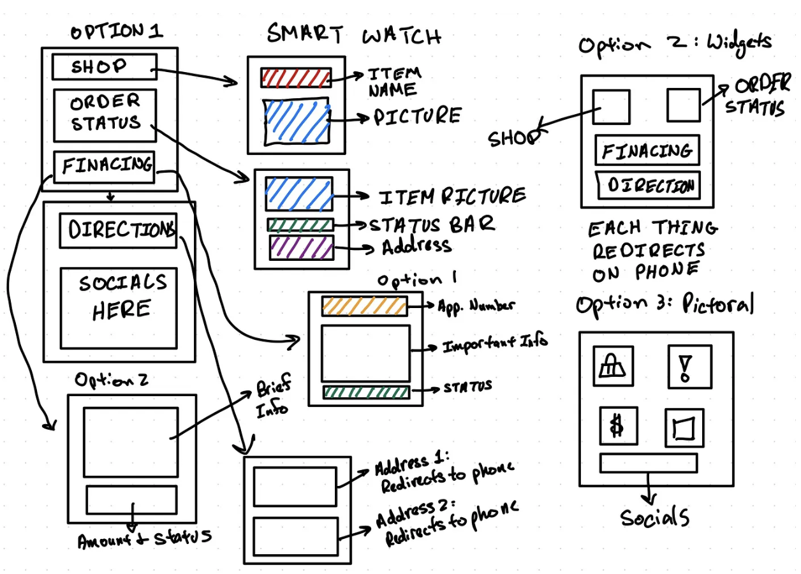
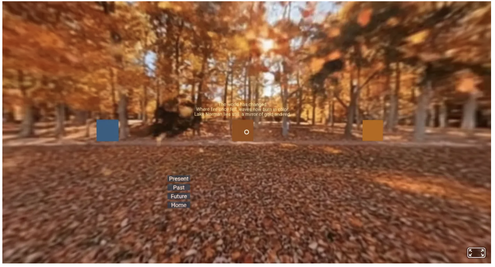
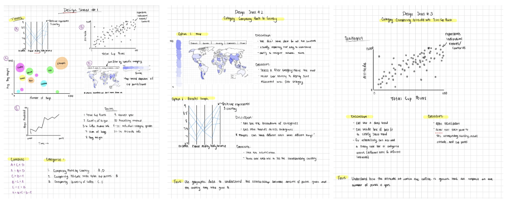
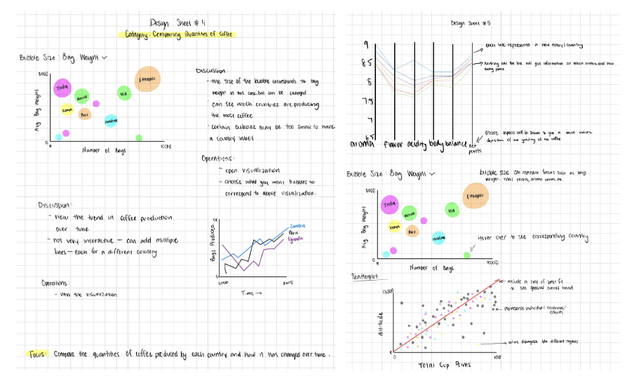
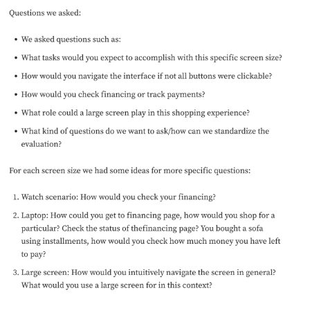

Manifesto
Before this course, I thought of design as primarily about the final product: a polished interface, a functional prototype, or a visually appealing outcome. Over the semester, working through the four design sprints, I discovered that design is much more about process—exploration, iteration, and reflection. Through these experiences, I came to appreciate several key lessons that now shape the way I approach design.
From the very first sprint, I learned that design is iterative and exploratory. Sketching, prototyping, and testing are not just steps to complete a task—they are essential tools for discovering what works and what doesn’t. In Sprint 1, my team and I began with quick, messy sketches to explore many possible layouts.
For each screen, we developed multiple ideas, often discarding concepts that seemed promising at first. Through sketching, I realized how critical it is to physically externalize ideas. It forced me to articulate assumptions and confront gaps in my thinking. Once we moved into Figma, prototyping allowed us to integrate interactivity, transforming static ideas into experiences we could test and refine. Seeing how small adjustments in navigation or layout changed user behavior reinforced the value of iteration: design is not a linear path toward a “finished” product, but a continuous cycle of exploration, reflection, and refinement.
Equally important was my growing appreciation for interactivity. Across all sprints, I discovered that what excites me most about design is creating moments that invite users to engage with content. In Sprint 1, interactive Figma prototypes allowed users to navigate between screens in ways that revealed priorities for each device dimension.
Sprint 3, with VR, pushed this even further: placing interactive boxes that revealed stories when looked at made the experience immersive and playful. I loved seeing how a simple interaction could completely change the user’s perception of a space. Even in Sprint 4, physical prototypes presented a similar thrill. Translating digital concepts into tangible, interactive elements required me to think about spatial and tactile engagement in entirely new ways. Interactivity, I learned, is not just a feature—it is the bridge between user and experience, transforming design from an object to something alive.
At the same time, constraints consistently guided creativity. Time, technical skill, and available resources forced me to prioritize and refine my ideas. Sprint 2, focused on data visualization, introduced the structured Five Design Sheets process.
 Initially, this framework felt excessive for the relatively small dataset we were using, but it became clear that it was a tool for clarifying focus. By articulating the story we wanted to convey and mapping data to visual features systematically, I gained a better understanding of how constraints can be productive rather than limiting. Working within these boundaries encouraged efficiency and creativity. We were forced to make deliberate choices about which data to visualize, what interactions to include, and how to balance analytical clarity with persuasive storytelling. Across all sprints, I came to see constraints not as obstacles but as catalysts that sharpen decision-making and encourage more thoughtful, intentional designs
Another lesson that became increasingly clear was the importance of user feedback. Observing peers interact with our Figma prototypes, listening to their insights, and asking targeted questions revealed subtleties I would never have noticed on my own. In Sprint 1, interviewing users about their experiences with fitness trackers helped us identify gaps in the industry, understand what people value most, and uncover areas for improvement. In Sprint 4, user testing of our prototypes from Sprint 1 helped us shape our design for the actual physical prototype. Initially, we had considered 3D printing or purchasing furniture for our prototype, but constraints forced us to rethink our approach and focus on the elements that most clearly communicated our core idea. Feedback during testing guided these decisions, helping us identify pain points, clarify confusing interactions, and refine how users engaged with the design.
Feedback wasn’t just about correcting errors; it became an opportunity to see the experience from another perspective and to understand how people interpret and navigate design elements. Earlier sprints reinforced this lesson in digital contexts as well: observing someone move through a VR environment or click through a Figma prototype revealed unexpected behaviors and insights. This experience echoed ideas from The Design of Everyday Things, where Norman emphasizes that two of the most important characteristics of good design are discoverability and understanding. These principles shaped the questions we asked during feedback sessions and interviews, pushing us to design interactions that were intuitive rather than explained. I came to see user feedback as not merely informative, but transformative because it challengeed assumptions, exposed blind spots, and strengthened the design.
Finally, I realized that design is most powerful when it centers the user. Every decision—from layout to interaction to medium—was shaped by considering how someone else would experience the work. This awareness of the human element made me more intentional in testing, refining, and iterating, and reminded me that design is not just about what is technically impressive, but about creating experiences that are meaningful, usable, and engaging for the people who interact with them. Whether working on interactive prototypes in Figma, immersive VR environments, or tangible physical models, keeping the user at the center guided every choice I made.
This perspective became the most transferable lesson from the course: no matter the technology—whether designing a website, a VR world, or even a brain-computer interface—the process of understanding people, anticipating their needs, and thoughtfully shaping their experience is what makes design effective and impactful. This idea directly connects back to one of our earliest readings, The Empathy Fieldguide, which emphasizes that design is fundamentally a user-centered process and that “by deeply understanding people we are better able to design for them.” The field guide outlines three ways to build that understanding: immersing yourself in the user’s experience, observing how users interact with a system, and engaging directly through conversation and interviews. All three of these practices appeared repeatedly throughout the semester, reinforcing the idea that good design is not driven by assumptions, but by empathy grounded in real human experience.
Throughout these sprints, I also grew in technical skill and confidence. Figma became a powerful tool for translating sketches into interactive prototypes, while VR development taught me to think spatially and experiment with novel interaction mechanics. Physical prototyping pushed me to think creatively about tactile engagement, revealing how digital design concepts can be translated into real-world, interactive experiences. Each medium had its own constraints and opportunities, and learning to navigate them reinforced the adaptability required of any designer.
Perhaps the most important takeaway from this course is that designing is a process, not a task. It is about building, iterating, testing, and reflecting with purpose, guided by empathy and insight. It is about understanding constraints, leveraging interactivity, seeking user feedback, and recognizing personal influence. It is about creating experiences that are engaging, meaningful, and human-centered. My experience in this class has strengthened not only my technical and design skills but also my mindset: approaching challenges with curiosity, embracing iteration, and keeping users at the center of every decision.
Looking ahead, these lessons will continue to guide me. Whether I am designing for web, VR, physical spaces, or other interactive systems, I now approach projects with a structured yet flexible mindset. I understand that design is rarely a straight line—it is a living, evolving process that thrives on exploration, interactivity, constraints, feedback, and personal insight. The principles I have learned in this class will shape every project I tackle, reminding me that meaningful design emerges not from a single decision or aesthetic choice, but from a thoughtful, iterative, and human-centered process.